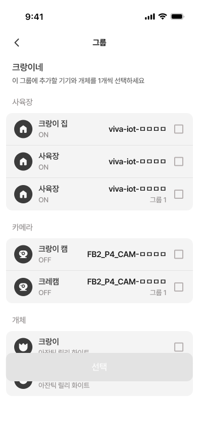
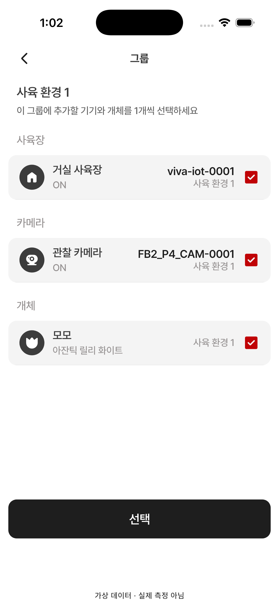

12 · 그룹 구성원 추가·변경
12 수정 반영 · 사용자 재확인 대기 · 0.107.18+229
수정 반영: 종류별 목록 배경(#F4F4F4)과 12pt 둥근 모서리를 적용했습니다. 기본 행 64pt, 종류 간격 24pt, 체크박스 24pt를 원본과 대조했습니다.
원본은 여러 항목의 미선택 예시이고, QA는 종류별 한 항목이 선택된 상태입니다. 항목 수·이름·체크 상태·버튼 활성 차이는 데이터에 따른 것입니다.
Figma · 393×852
12 · 시뮬레이터 · 402×874
수정 전 · 카메라 체크 해제 · 393pt 위젯 캡처(카메라 2개) · 검수 범위와 검증 결과